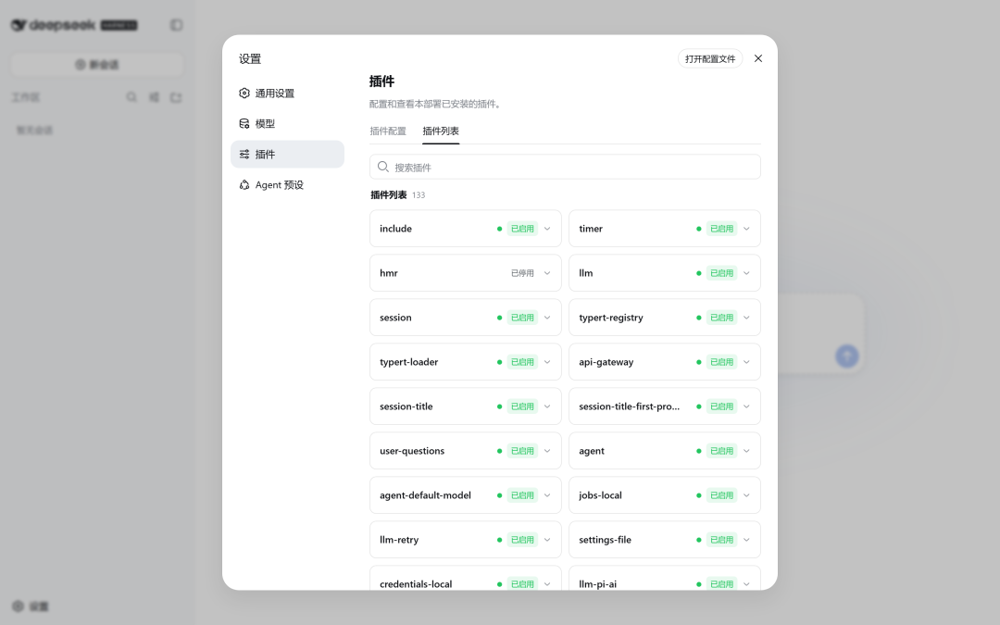
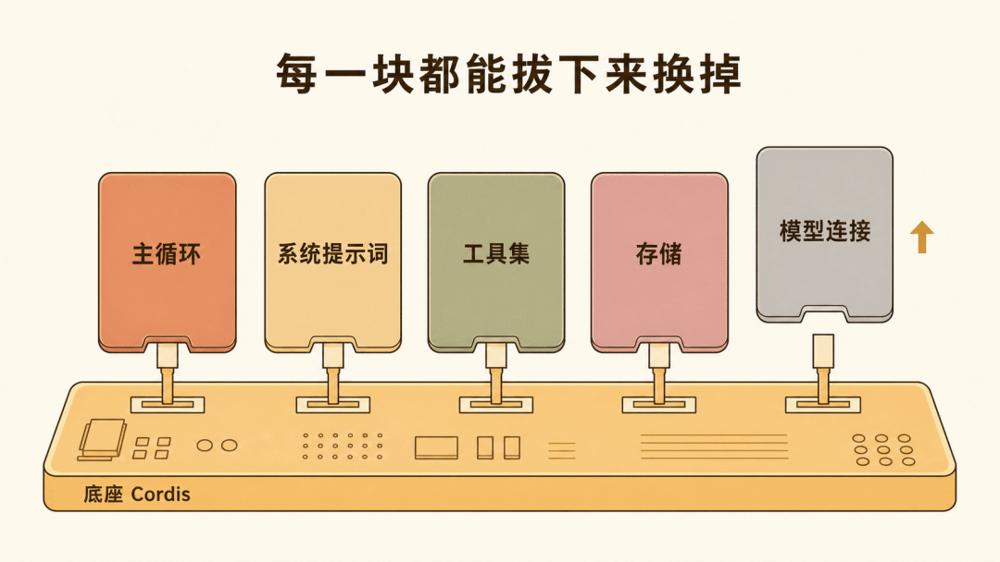
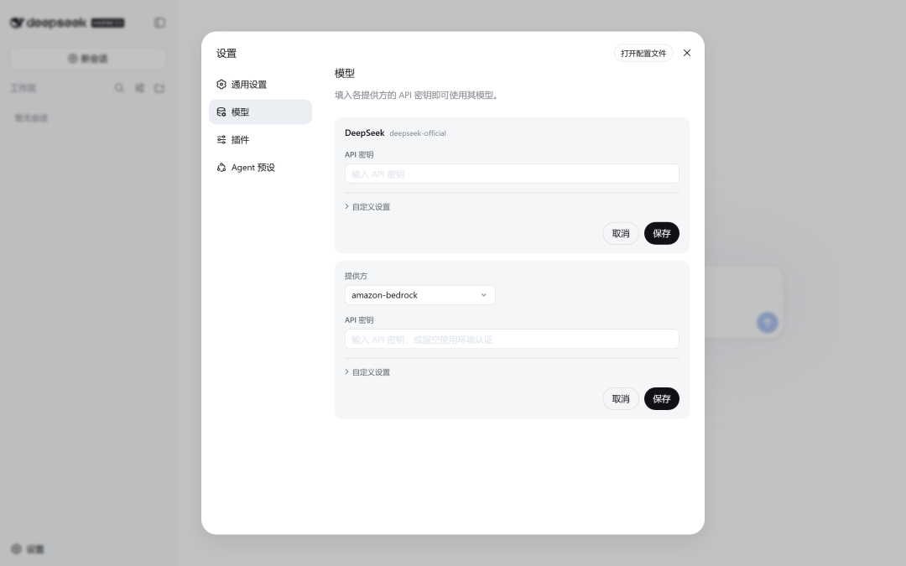
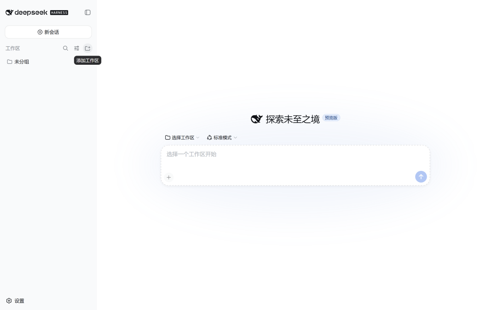
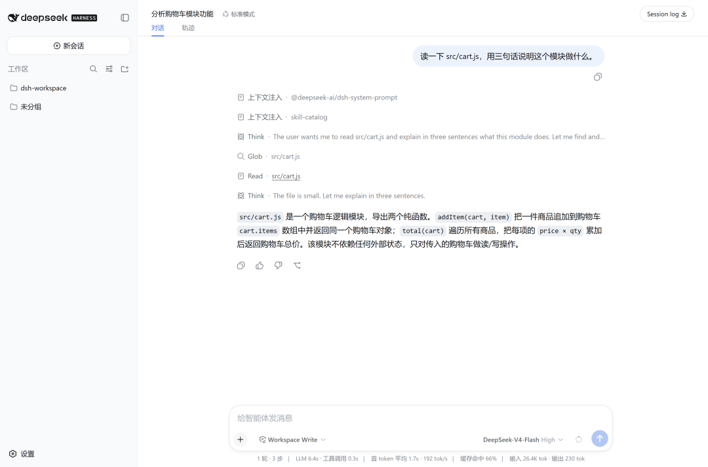
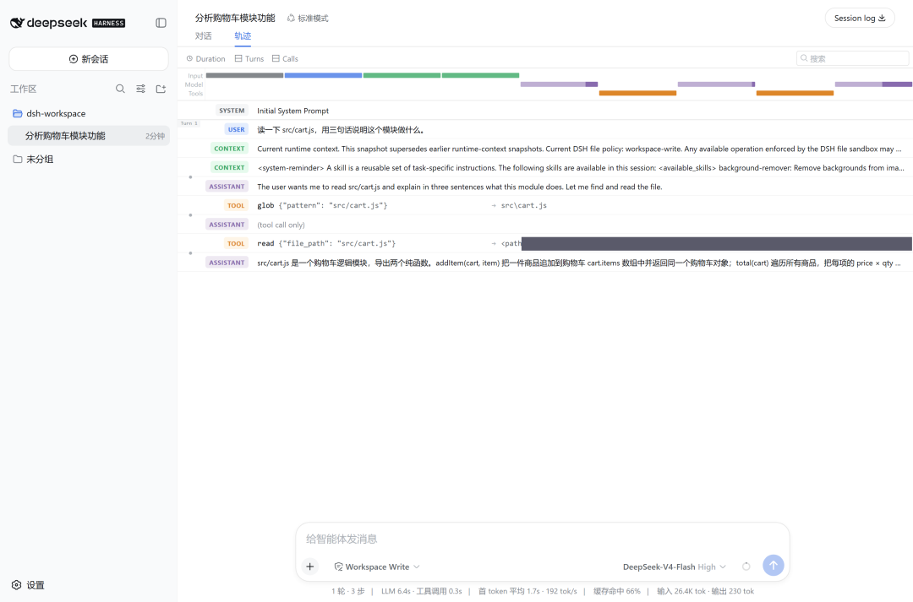

今年三月，我写过一篇《提示词工程已成过去式》，聊的是模型之外的那套系统。它靠约束、告知、验证和纠正，让模型稳定地完成任务。
当时，harness 还只是一个刚被命名的概念。
五个月后，DeepSeek 把这个概念做成产品并开源，名字叫 DeepSeek Harness，简称 dsh。
我装好 dsh，拿一个预埋了问题的小仓库跑了首个真实任务。从按下回车到结果输出完毕，全程 17.7 秒。测试过程中有三件事出乎我的意料。
两天冲上 10 万星
DeepSeek 在 8 月 13 日建立了这个仓库。项目采用 MIT 协议，代码用 TypeScript 编写，口号只有一句，Everything is a Plugin，一切皆插件。
截至 8 月 15 日，仓库已有 100,318 个 star 和 9,466 个 fork，建立还不到两天。
npm 上的记录更早。第一个版本在 8 月 10 日发布，比公开宣布早了三天。
README 里还挂着一行全大写警告，提醒开发者后续版本会有破坏兼容性的改动。官方把它定义为 developer preview，也就是开发者预览版。
我实测的版本是 0.1.0-rc.6，日期为 8 月 15 日。你读到这篇文章时，命令和界面很可能已经变了。
模型很强，干活还得有 harness
模型明明很聪明，却经常完不成一件完整的工作。它能在几秒内设计一套加密算法，也会因为写错文件路径让整个流程停下来。有人把这种状态概括为尖刺智能，某些能力极强，稳定性却不够。
要让模型持续干活，外面还需要一套系统，负责读文件、跑命令、管理权限和保存记录，出错时也能及时拉回来。这套系统就是 harness。
用一个已经讲旧了却仍然好用的比方，模型像 CPU，上下文窗口像内存，harness 则像操作系统。CPU 性能再高，操作系统没把资源和任务管好，整台机器依然跑不顺。
过去一年，各家编码 agent 都在搭自己的 harness。Claude Code 有一套，Codex 也有一套。用户可以直接使用，却很难改动内部机制。
DeepSeek 这次把自己的实现开源了，而且从一开始就给用户留出了改装空间。
一块可以换零件的主板
dsh 可以看作一个支持插件的 AI agent 运行时。
你在终端敲一行命令，它会启动本地服务，再在浏览器里提供聊天界面。你让它读代码、改文件或跑命令，它就调用相应工具去执行。这些体验和常见的编码 agent 很接近。
dsh 的特别之处在于，大部分组件都能替换。我更愿意把它理解成一块主板。接口已经准备好，模型、工具和存储方式由你自己选。
有个细节能看出这块主板有多标准。dsh 的 plugin 子命令没有自己造一套包管理，而是把参数原样转发给 pnpm。装一个插件，走的就是装 npm 包那条路。
后面的实测也都能用这块主板来理解。
连主循环都能换
口号喊得再响，也得回到代码里看。我在这一部分花的时间最多。
主包 @deepseek-ai/dsh 解包后只有 114 KB。它的依赖列表里，除了三个通用工具库，其余都以 @deepseek-ai/dsh-* 开头，主要能力被拆进了一个个插件包。
安装完成后，我在设置页数了一遍。web profile 默认装了 133 个插件，其中 107 个启用，26 个停用。

插件清单里有不少关键部件。agent-loop 负责 agent 主循环，system-prompt 管系统提示词，tools 提供工具集，storage 管存储，llm-deepseek 负责连接模型。
主循环可以替换，这一点在依赖列表里写得很清楚。

我还看到两个让 Windows 用户舒心的名字，dsh-tool-pwsh 和 dsh-pwsh-local。它们提供原生 PowerShell 支持。清单里的 dsh-mcp-client 和 dsh-plan-mode，分别对应 MCP 与计划模式。
用户可以从配置文件开始改装。一个 profile 只有四个文件，通常只需要编辑 cordis.patch.yml。旁边的文件还留了一句注释，大意是整棵配置树由补丁组合而成，请改 patch 文件，不要直接动它。
插件机制由 Cordis 提供。它的核心代码约两千行 TypeScript，负责依赖注入和可逆副作用。移除插件时，插件产生的相关影响也能一并回滚。
Cordis 来自 Koishi。后者是一个国产 QQ 机器人插件框架，四年里积累了四千多个社区插件，配套论文也把 Koishi 作为案例研究。
DeepSeek 用来运行 agent 的这套插件机制，最早服务于 QQ 机器人。
装完以后能做什么
dsh 有两种运行方式。
dsh web 会启动本地服务，用户在浏览器里操作，适合坐在电脑前使用。dsh --profile headless 省去界面，直接从命令行接收任务，适合脚本和流水线。
模型方面，它内置了 36 家提供方，开箱只配置好 DeepSeek 官方一家，其余需要手动添加。国内厂商各有对应端点，Kimi、MiniMax、通义、智谱和小米都在列表里。这次测试我全程使用 DeepSeek 官方接口，其他提供方暂未展开。
密钥输入框下方有一行提示，可以输入 API 密钥，也可以留空使用环境认证。

我建议走环境认证。因为我后来在家目录里找到了 ~/.dsh/.credentials.yaml，界面里填写的 key 会以明文保存在这个文件中。使用环境变量，key 就不会写进这里。
模型定下来，接着要问的是它能在你的机器上做多少事。
权限分为三档，分别对应只读、仅写工作区和完全放开，默认使用中间一档。
会话日志显示，开箱时的权限预设与沙箱模式都是 workspace-write，危险操作策略是 ask。这些默认值相当克制。一个能读磁盘、跑命令的工具，起步时谨慎一点很有必要。
每次会话还会保存为一个 session.jsonl.zstd 文件。
我拆开测试任务的日志数了一遍，一个文件里有 49 个独立的 zstd 数据块，共 95 条事件。每次写入都会追加新的压缩块，无需重写整个文件；读取时再按顺序解开并拼起来。
会话之所以能回放、能分叉，靠的就是这些完整事件。只要记录还在，用户可以从其中任意一步重新开始。
一行命令跑通首个任务
冷启动时，我先执行了下面这条命令。
npx --yes @deepseek-ai/dsh --help第一次运行需要下载全部依赖，一共用了 3 分 07 秒。中间没有进度提示，得多等一会儿。
依赖进入缓存后，再启动服务只要约 1 秒。
npx --yes @deepseek-ai/dsh web终端只输出一行。
dsh web: http://127.0.0.1:3080用浏览器打开地址，界面默认显示中文，标语是「探索未至之境」，右上角带着预览版标记。第一屏会提示填写 API Key，也可以稍后再配置。
进入主界面后，输入框暂时是灰色的，占位文字写着「选择一个工作区开始」。添加工作区以后，输入框就能使用了。

正式测试放在 headless 模式里。我准备了一个小仓库，在 src/cart.js 里埋了一个不容易一眼看出的毛病。addItem 本该算出一个新的购物车还给你，实际上却把你传进去的那个直接改掉了，调用方手里的数据在不知情的情况下就变了。不碰外部数据的函数叫纯函数，这个 addItem 显然不是，它带着副作用。这个区别后面还会再用到。
npx --yes @deepseek-ai/dsh --profile headless \
"阅读这个仓库，用中文说明它是做什么的，并指出 src/cart.js 里存在的问题。简洁一些。"从按下回车到结果输出完毕，共用 17.7 秒，其中启动占了 4 秒多。
dsh 读懂了仓库，列出五个问题。第一条正是我埋的那个毛病，它的说法是：addItem 直接修改入参，改变了调用方传入的对象，并返回同一个引用。它的中文表达也很自然，没有明显的翻译腔。
整个过程包含 1 轮对话、3 个步骤和 4 次工具调用。Web 界面底部的状态栏会显示这些数字，和会话日志里的事件能够对应起来。

三件意外
它认出了我给其他工具写的 skill
Web 界面里有个「轨迹」标签页，可以查看发给模型的系统提示词原文。我顺手点开，发现里面有一块 skill-catalog，列出了六个 skill 的名称和描述。
我从未给 dsh 配置过任何 skill。
继续往下查，dsh 读取的是 ~/.agents/skills/。这个目录采用跨工具的通用约定，我正好在里面放了六个为其他 agent 编写的 skill。

我还维护着另一个目录，里面有 41 个 skill，dsh 没有读取。系统提示词里出现的内容，只来自 ~/.agents/skills/ 下的那六个。
无需额外配置，dsh 就认出了我为其他 agent 写的 skill。
这件事带来一个很直接的好处。skill 可以在不同工具之间复用，以前的积累不用重新写一遍。
同时也要留意信息暴露。六个 skill 的描述被放进系统提示词，总计 1527 个字符，粗算约 694 个 token。根据轨迹里的内容，这些描述会随每轮对话发到服务端，约占整个系统提示词的四分之一。
数量不算大，整个过程却没有给出明显提醒。如果 skill 描述中写了公司项目名、内部路径或流程，装完 dsh 后最好先检查 ~/.agents/skills/ 里放了什么。
Web 界面默认只服务本机
我原本打算把 Web 界面部署到服务器上，走到哪儿都能打开浏览器使用。实测后，我放弃了这个计划。
dsh web 只监听 127.0.0.1。我用 netstat 确认过，服务仅绑定环回地址。在远程机器上启动服务，其他电脑无法直接访问。
点击「添加工作区」时，dsh 会调起操作系统原生的目录选择框。这个窗口需要鼠标操作，我使用的自动化脚本无法点击，无头浏览器也渲染不出来。最后还是手动选择了一次目录，流程才继续往下走。
这两项限制符合一个高权限本地工具应有的默认做法。服务不向外开放，可以少暴露一个入口；目录选择交给操作系统，也能避免网页直接读取完整路径列表。
它的分工由此变得很清楚。Web 界面供人操作，自动化和流水线交给 headless。
看清两个 profile 的用途，就能少走我这一轮弯路。
默认模型用的是 Flash
DeepSeek 在 8 月 13 日宣布调价，新价格于 17 日生效。我看完价目表，默认 dsh 跑的是旗舰款 V4-Pro，心里已经按那一档的价格做好了准备。
会话日志的请求头给出了答案。默认模型是 deepseek-v4-flash，推理强度为 high，上下文上限 25.6 万 token。
dsh 默认采用价格更低的 Flash，而不是旗舰款 V4-Pro。这个设置直接影响了下面这笔费用。
这一趟花了多少钱
前面那个 17.7 秒的任务，一共用了 27,158 个输入 token。其中 17,792 个命中缓存，9,366 个是新输入，缓存命中率为 65.5%。输出用了 1,135 个 token，包含 332 个推理 token。
按 Flash 的现价计算，这一趟大约花了 1.2 分钱。如果完全没有缓存命中，费用约为 2.9 分。缓存省下了将近六成。
算账时我还踩了一个小坑。日志中的 inputTokens 和 cacheReadTokens 是两个互斥的计数器。我最初拿总数减去缓存命中，结果算出了负数。重新看字段含义后才确认，总输入量需要把两者相加。
不过这笔账很快要重算。8 月 17 日 0 点起新价格生效，同时引入峰谷时段，北京时间 9 点至 12 点、14 点至 18 点属于峰时，其余时段价格减半。
V4-Pro 涨得更明显。缓存命中的输入从每百万 token 0.025 元涨到峰时 0.3 元，相当于原来的 12 倍；输出从 6 元涨到 27 元，相当于原来的 4.5 倍。两个倍数不同，不能混在一起说。
Flash 同样在调价名单里。缓存命中的输入从 0.02 元涨到峰时 0.1 元，未命中输入从 1 元涨到 3 元，输出从 2 元涨到 9 元。我按新价把前面那趟任务重算了一遍，谷时约 2 分钱，峰时约 4 分钱。
所以默认用 Flash 省下的是模型档位的差价，并不是免掉这一轮调价。真要控制成本，把批量任务放到谷时跑，还能再省一半。
它和 Claude Code、Codex 怎么选
很多人会拿 dsh 和 Claude Code、Codex 对比功能。我更愿意换个角度，从整机和主板来看三者的取舍。
Claude Code 和 Codex 像调好参数的整机，dsh 像一块带插槽的主板。
整机开箱就能用，出厂配置也经过调优，用户无需关心内部怎样接线。
主板把接口都露在外面。系统提示词可以换，主循环也可以换，团队能够按照自己的系统和流程重新组合。
代价也很直接。dsh 不会替你决定每个位置该装什么。你需要明确自己的需求，也要理解事件驱动和依赖注入的基本语义。
多数用户只想尽快把工作做完，整机更省心，我平时用得最多的也是整机。
如果团队要把 agent 嵌入自己的系统，替换其中某个环节，或者完整记录每一步以便审计，dsh 这类开放运行时才更合适。
现阶段先别急着上生产
这一节写得比前面都慢，因为得把限制讲清楚。
dsh 仍处于开发者预览阶段。我测试的版本号还带着 rc，README 也明确警告后续会有破坏兼容性的改动。现在把它放进生产环境，风险太高。
文档也在追赶开发进度。发布当天，官方 README 提供的信息很少，许多细节只能靠依赖列表、配置文件和会话日志确认。
这套插件架构是否值得引入，社区里也有争议。
有分析认为，搜索服务、skill 文件和上下文管理等需求，现有工具通过重启或重新加载就能处理。Cordis 主要负责插件调度，业务状态如何清理和恢复，仍然需要开发者自己实现。
上下文压缩与记忆功能目前也比较初级。插件清单里只有一个基础的压缩实现，长任务运行后的表现，我这次没有测到。
测试中还出现了一次更值得警惕的冲突。我在 Web 界面里重新询问同一个文件，让它说明模块用途。它回答说，这里导出了两个纯函数。
几分钟前，同一个模型在 headless 模式下准确指出 addItem 会改掉传进去的对象，是副作用函数，恰恰不纯。文件没有变化，只换了一种问法，两个结论就互相打架。
harness 可以完整记录过程，结论是否正确仍需用户验证。这条提醒适用于所有 agent，dsh 也不例外。
概念终于变成了零件
把 dsh 称作 agent 的安卓时刻，是个很容易冒出来的联想。我对这个判断还有保留。
安卓后来的规模，靠的是多年积累的开发者与应用生态。dsh 在我这台机器上默认装的 133 个插件全部来自官方，这只是起点。
社区倒是跑得比我预想的快。开源第二天，就有人整理出一份收录 270 个第三方插件的清单，分成 UI 增强、工具能力、开发运行时等十一类。数量已经起来了，能不能沉淀出真正好用的那批，还得再看几个月。
有一件事已经很明确。
五个月前，我写下约束、告知、验证和纠正时，它们还是一套方法，用来说明怎样让模型稳定完成任务。
如今，这些能力已经变成可以替换的模块，逐个列在依赖清单里。
概念变成了零件，这一步比仓库里的 star 数更值得关注。
最后再看那个跨工具的 skill 目录。我为一个工具写的内容，另一个工具无需配置就能直接识别。这个细节不显眼，却让我看到了工具之间共享能力的可能。
你更喜欢开箱即用的 AI 编码工具，还是愿意自己组装？如果拿到一块可以自由换零件的主板，你最想先换掉哪一部分？ 欢迎在评论区聊聊。
觉得有用，顺手点个「在看」，我们下期见。